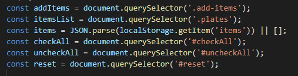
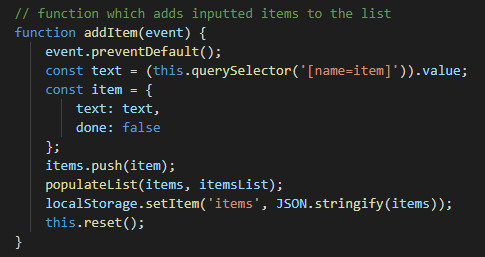
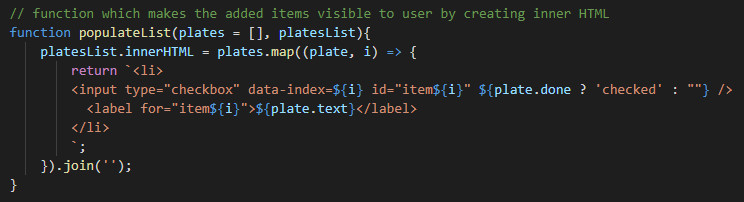
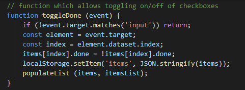
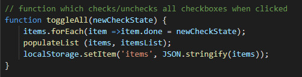
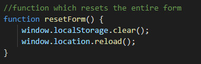
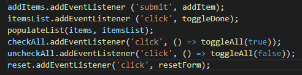

Make variables for all the HTML elements you want to target with Javascript.
Do this by using document.querySelector to target the element by class, tag name or id.
In this example the variable 'addItems' is a constant which uses a querySelector to target the HTML element with class 'add-items'.

Create a function that adds items written in the input box to the tapas list.
First prevent default behaviour which causes page reload by using event.preventDefault.
Then create a variable called 'text' which selects the inputted text value from the form.
Pass this text into an object called item, with another key-value pair of done: false. This means the checkbox is automatically set to false.
Push the item into the items array.
Populate the list and add the item to the local storage so that it is remembered.

Create a function that changes the innerHTML and adds our items so they are visible to the list user.
Once the items are added to the list using the 'addItem' function we need to add them to the inner HTML so that they are visible to the user.
To do this we create a function called populateList which takes two parameters: plates = [] and platesList.
We then add a list item to the inner HTML by using populateList.innerHTML.
We use a ternery operation to check whether the item is checked or unchecked so that it shows properly on screen.

Create a function which allows you to check or uncheck chosen items on the list.
This function will run when the checkbox is clicked.
Therefore it is inportant to first tell the function not to run if an area outside of the checkbox input is clicked.
Using the following code allows the box to check if unchecked and uncheck if already checked.
This is then passed into populateList and the local storage is updated with the new preferences.

Create a function which allows all checkboxes to be checked or unchecked at once.
This function takes an argument of true or false which will either check or uncheck all boxes respectively.
The function iterates over the items array and changes the check state.
It then populates the list and adds the information to the local storage.

Create a function which allows the entire list to be reset.
In order to clear the entire form and everything stored in it we need to empty the local storage of its stored data.
To do this we use the clear() method on the local storage.
We then reload the page to show the changes made to the local storage.

Add event listeners to each variable and trigger one of the previous functions when the event occurs.
Finally, in order for the functions to have an effect we need to tell Javascript when to run the functions.
We do this by adding event listeners to each of the variables.
Most of the event listeners are clicks which then trigger a function to run.
In this example, the 'addItems' variable is listening for 'submit' events.
This means either a mouse click or that the Enter button is pressed.
When a 'submit' event is triggered the 'addItem' function is triggered and the code within it executes.
